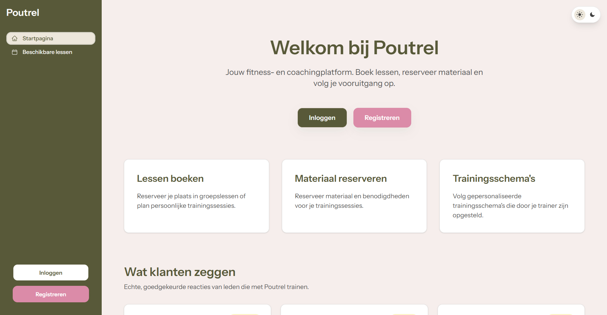
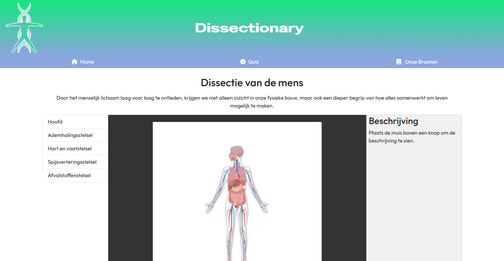
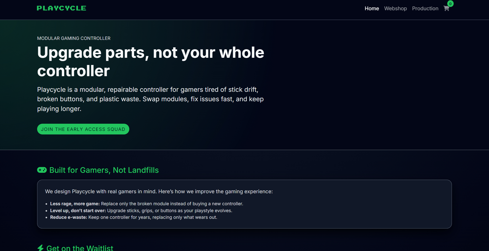
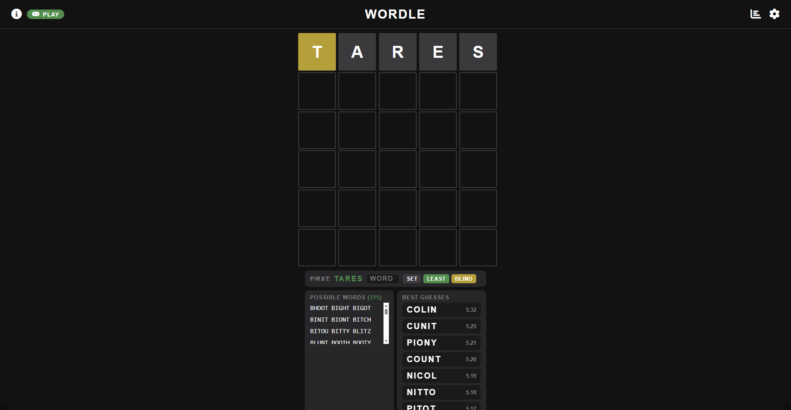

Projects & Achievements
Each project below includes context, what I actually made, what I learned, and - for group work - exactly which part was mine.

A fitness coaching management platform being built for a client - Poutrel. The app handles training session management, material distribution, and customer guidance in one integrated web application.
This is the semester-two SKIL2 assignment - a group project for a client. Poutrel is a fitness coaching business that is in need of a digital tool to manage their workflow. Working for a client added requirements gathering, expectation management, and iterative feedback to the technical challenge.
Within the team I am responsible for the functionalities where customers can buy lesson packages, view the training schemes given by their coach and give feedback on how the exercises went. I also am responsible for the layout and styling across all pages.

An interactive educational web platform built to help students explore human anatomy and test their knowledge through guided quizzes and structured content.
Built as the semester-two SKIL1 project. The goal was to apply HTML, CSS, and JavaScript skills in a real use-case: making anatomy approachable and interactive for learners. The project ran over several weeks with a team of classmates.
I was responsible for the styling, creating images, and fixing errors in the project. I also helped coordinate the structure of the project files to keep the team's work consistent.

A modular game controller concept designed to fight electronic waste - individual components can be replaced or upgraded independently, extending the product's life instead of discarding the whole unit.
Playcycle came from a question I kept asking: why do entire controllers become landfill when a single thumbstick wears out? The concept combines modular hardware design with a circular economy model aimed at the gaming market.
Within the team I was responsible for the production page and documentation. I also helped with the representation and design of Playcycle's brand.

A fully functional browser-based Wordle game with a solve and play mode, including a way to set your first word and get recommendations for the next best word to use.
I built this Wordle Solver originally to figure out the best way to play Wordle, but I started to implement more features as I went along for a better all-round Wordle experience. I implemented the full game logic using vanilla JavaScript with no libraries.
Solo project, built entirely by me. Designed, coded, and deployed from scratch - no templates or libraries for the game logic.